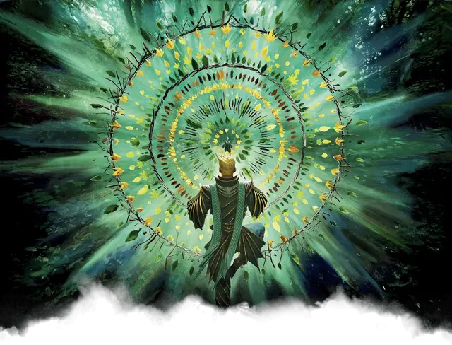

Студент Квандрикса
Quandrix Student

Готовясь стать студентом факультета Квандрикс, вы потратили годы на решение математических задач факультета для будущих студентов. Ваши интересы сосредоточены на математических принципах и закономерностях, встречающихся в мире природы. Вы можете больше склоняться к математике или физике, или углубиться в более абстрактные исследования метафизики, тайн или логики.
Владение навыками: Магия, Природа
Владение инструментами: Один вид ремесленных инструментов
Языки: Один на ваш выбор
Снаряжение: Бутылочка чёрных чернил, писчее перо, абак, книга по теории магии, школьная униформа и поясной кошель с 15 зм
УМЕНИЕ: Поступивший в Квандрикс
Вы получаете черту «Поступивший в Стриксхейвен» и обязаны выбрать для неё факультет Квандрикс.
Кроме того, если вы владеете умением «Использование заклинаний» или «Магия договора», то заклинания из таблицы «Заклинания Квандрикса» добавляются в список заклинаний вашего класса заклинателя (Если вы мультиклассовый персонаж с несколькими списками заклинаний, то эти заклинания добавляются в каждый из них).
Заклинания Квандрикса
| Уровень заклинаний | Заклинания |
| 1-й | опутывание [entangle], направляющий снаряд [guiding bolt] |
| 2-й | увеличение/уменьшение [enlarge/reduce], вихрь искривления [vortex warp] |
| 3-й | аура живучести [aura of vitality], ускорение [haste] |
| 4-й | власть над водами [control water], свобода перемещения [freedom of movement] |
| 5-й | круг силы [circle of power], создание прохода [passwall] |
Подумайте о том, чтобы настроить внешний вид ваших заклинаний, когда вы их накладываете. Ваши заклинания Квандрикса могут проявляться среди калейдоскопических завихрений фрактальных узоров, усиливая мельчайшие движения ваших соматических компонентов. Когда ваша магия создает или изменяет существ, она может ненадолго окружить цели мерцающими фрактальными рисунками или мозаичными узорами.
Создание персонажа Квандрикса
Любой заклинательный класс или подкласс может хорошо работать для персонажа Квандрикса. В Квандриксе приветствуются как научная направленность волшебников (особенно тех, кто изучает Школы Ограждения, Иллюзии или Преобразования), так и метамагические манипуляции чародеев, и многие друиды также исследуют закономерности природы в Квандриксе. Некоторые жрецы, особенно причастные к доменам Знаний или Природы, также учатся в Квандриксе.
Помимо традиционных заклинателей, в Квандриксе находят себе дом несколько других классов персонажей. Некоторые воины, монахи, следопыты и плуты учатся здесь, используя принципы Квандрикса для тренировки своего ума.
Варианты персонализации. С предметами, варьирующимися от физических и материальных до парадоксальных и странных, студенческий состав факультета Квандрикс включает в себя эклектичную смесь людей. В таблице Черты характера Квандрикса предлагаются различные черты, которые вы могли бы применить для своего персонажа.
Черты характера Квандрикса
| к6 | Черта характера |
| 1 | Когда я нахожу предмет, который мне интересен, я не перестану заниматься, пока не узнаю о нем все. Это не дает мне спать по ночам. |
| 2 | Я надеюсь, что однажды все это обретет для меня смысл. А пока я буду продолжать притворяться. |
| 3 | Уравнения и закономерности приходят мне в голову естественным образом. Я хочу, чтобы дружба приходила так же легко. |
| 4 | Я считаю, что я всегда самый умный человек в комнате. И я докажу это, даже если меня об этом никто не попросит. |
| 5 | Если эти занятия меня чему-то и научили, так это тому, что реальность — ложь, и ничто не имеет значения. Так зачем беспокоиться? |
| 6 | Прежде чем я закончу учебу, я хочу достичь чего-то математически невозможного. Я должен оставить наследие! |
Безделушки Квандрикса. Когда вы создадите своего персонажа, вы можете один раз совершить бросок по таблице Безделушки Квандрикса, вместо броска по таблице Безделушки из Книги игрока, для своей стартовой безделушки.
Безделушки Квандрикса
| к6 | Безделушка |
| 1 | Небольшой суккулент в двенадцатигранном глиняном горшке. |
| 2 | Синяя вязаная шапка, немного напоминающая сложившуюся бутылку. |
| 3 | Модель гиперкуба, вырезанная из зеленого кристалла, демонстрирующая четвертое измерение. |
| 4 | Скомканный тест по теории управления гравитацией, с неудовлетворительной оценкой на лицевой стороне и именем известного профессора Квандрикса. |
| 5 | Синий тетраэдр, который при двойном постукивании проецирует запись старой лекции по математике. |
| 6 | Круглая булка хлеба, нарезанная так, чтобы кто-то мог намазать маслом обе половинки, даже не поднимая ножа. |